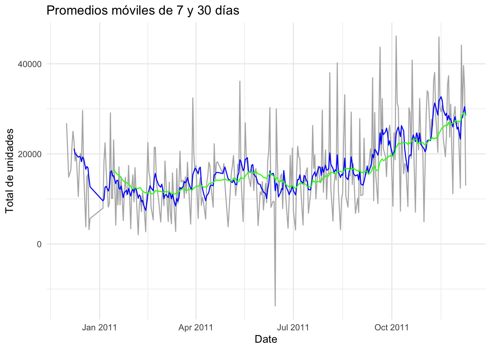

Capítulo 3 PREDICCIÓN DE ORDENES - SERIES DE TIEMPO
# Se instala lo necesario para proceder
library(tidyverse) # dplyr, ggplot2, etc.
library(readxl) # leer archivos .xlsx
library(lubridate) # manejo de fechas
library(zoo) # promedios móviles
library(forecast) # funciones de series de tiempo
library(knitr) # Resultados en tablas
library(ggplot2) # Graficos# Leer la primera hoja (cámbiala con `sheet =` si hiciera falta)
retail <- read_excel("Online Retail 2.xlsx")
# Vistazo rápido a la estructura
dplyr::glimpse(retail)## Rows: 541,909
## Columns: 8
## $ InvoiceNo <chr> "536365", "536365", "536365", "536365", "536365", "536365"…
## $ StockCode <chr> "85123A", "71053", "84406B", "84029G", "84029E", "22752", …
## $ Description <chr> "WHITE HANGING HEART T-LIGHT HOLDER", "WHITE METAL LANTERN…
## $ Quantity <dbl> 6, 6, 8, 6, 6, 2, 6, 6, 6, 32, 6, 6, 8, 6, 6, 3, 2, 3, 3, …
## $ InvoiceDate <dttm> 2010-12-01 08:26:00, 2010-12-01 08:26:00, 2010-12-01 08:2…
## $ UnitPrice <dbl> 2.55, 3.39, 2.75, 3.39, 3.39, 7.65, 4.25, 1.85, 1.85, 1.69…
## $ CustomerID <dbl> 17850, 17850, 17850, 17850, 17850, 17850, 17850, 17850, 17…
## $ Country <chr> "United Kingdom", "United Kingdom", "United Kingdom", "Uni…## --- 1. Agregar la cantidad por día ----------------------------------
# Aseguramos que 'InvoiceDate' sea fecha-hora y creamos la columna Date
retail <- retail %>%
mutate(Date = as.Date(InvoiceDate))
# Sumamos la cantidad vendida por día
daily_sales <- retail %>%
group_by(Date) %>%
summarise(TotalQty = sum(Quantity, na.rm = TRUE)) %>%
ungroup()
## --- 2. Gráfico base de la serie diaria ------------------------------
library(ggplot2)
ggplot(daily_sales, aes(Date, TotalQty)) +
geom_line(color = "gray40") +
labs(title = "Cantidad total vendida por día",
x = "Fecha", y = "Total de unidades") +
theme_minimal()library(dplyr)
library(zoo)
# Crear tabla con medias móviles
daily_ma <- daily_sales %>%
arrange(Date) %>%
mutate(
MA_7 = zoo::rollmeanr(TotalQty, 7, fill = NA),
MA_30 = zoo::rollmeanr(TotalQty, 30, fill = NA)
)
names(daily_ma)## [1] "Date" "TotalQty" "MA_7" "MA_30"library(ggplot2)
ggplot(daily_ma, aes(Date)) +
geom_line(aes(y = TotalQty), colour = "grey70") +
geom_line(aes(y = MA_7), colour = "blue") +
geom_line(aes(y = MA_30), colour = "green") +
labs(title = "Promedios móviles de 7 y 30 días",
y = "Total de unidades") +
theme_minimal()## Warning: Removed 6 rows containing missing values or values outside the scale range
## (`geom_line()`).## Warning: Removed 29 rows containing missing values or values outside the scale range
## (`geom_line()`). La media móvil de 30 días (línea roja) muestra una tendencia ascendente clara desde mayo-2011, mientras que la de 7 días (azul) revela picos semanales.
library(dplyr)
library(ggplot2)
daily_lag <- daily_sales %>% # usamos la tabla diaria original
arrange(Date) %>%
mutate(
Lag_1 = dplyr::lag(TotalQty, 1),
Lag_7 = dplyr::lag(TotalQty, 7)
)ggplot(daily_lag, aes(Date)) +
geom_line(aes(y = TotalQty), colour = "black") +
geom_line(aes(y = Lag_1), colour = "orange", linetype = "dashed") +
geom_line(aes(y = Lag_7), colour = "purple", linetype = "dotted") +
labs(title = "Serie comparada con rezagos de 1 y 7 días",
y = "Total de unidades") +
theme_minimal()## Warning: Removed 1 row containing missing values or values outside the scale range
## (`geom_line()`).## Warning: Removed 7 rows containing missing values or values outside the scale range
## (`geom_line()`). La superposición con el rezago de 1 día (naranja) indica alta autocorrelación diaria; el rezago-7 (morado) refuerza la periodicidad semanal.
La superposición con el rezago de 1 día (naranja) indica alta autocorrelación diaria; el rezago-7 (morado) refuerza la periodicidad semanal.
library(forecast) # ya lo tienes cargado
library(ggplot2)
# 1. Convertir la columna TotalQty en un objeto ts semanal
ts_qty <- ts(daily_sales$TotalQty, frequency = 7)
# 2. Descomponer con STL
decomp <- stl(ts_qty, s.window = "periodic")
# 3. Graficar los componentes
autoplot(decomp) +
labs(title = "Descomposición STL: tendencia, estacionalidad y residuales")El componente seasonal presenta oscilaciones regulares cada 7 puntos, confirmando efecto semanal; la tendencia suavizada muestra un crecimiento paulatino en la demanda.
PRUEBAS DE ESTACIONARIEDAD (ADF & KPSS)
library(tseries)
#––– 1. Dickey–Fuller aumentada –––#
adf_result <- adf.test(ts_qty, alternative = "stationary")
adf_result$p.value # < 0.05 ⇒ estacionaria## [1] 0.01#––– 2. KPSS (complementaria) –––#
kpss_result <- kpss.test(ts_qty, null = "Level")
kpss_result$p.value # > 0.05 ⇒ no se rechaza estacionariedad## [1] 0.01En este caso podemos evidenciar que las dos pruebas miran la estacionariedad desde lados opuestos:
La ADF busca evidencia de que hay una tendencia aleatoria, y si la p-value es baja, dice que no la hay → entonces la serie es estacionaria.
La KPSS parte diciendo que la serie sí es estacionaria, y si la p-value es baja, entonces te dice no confíes, no lo es.
ADF = 0.01 ⇒ la serie podría ser estacionaria
KPSS = 0.01 ⇒ la serie no lo es
üìå Cuando ambas pruebas contradicen, se interpreta que la serie:
➤ No es estacionaria en nivel, pero podría volverse estacionaria si quitamos la tendencia (es decir, con una diferenciación o eliminando tendencia).
ts_qty <- ts(daily_sales$TotalQty, frequency = 7)
ts_diff1 <- diff(ts_qty, 1)
# Graficamos para ver cómo luce
autoplot(ts_diff1) +
labs(title = "Serie diferenciada (orden 1)", y = "Diferencias")## Warning in adf.test(ts_diff1): p-value smaller than printed p-value##
## Augmented Dickey-Fuller Test
##
## data: ts_diff1
## Dickey-Fuller = -10.57, Lag order = 6, p-value = 0.01
## alternative hypothesis: stationary## Warning in kpss.test(ts_diff1, null = "Level"): p-value greater than printed
## p-value##
## KPSS Test for Level Stationarity
##
## data: ts_diff1
## KPSS Level = 0.034586, Truncation lag parameter = 5, p-value = 0.1## Warning in adf.test(ts_diff1): p-value smaller than printed p-value##
## Augmented Dickey-Fuller Test
##
## data: ts_diff1
## Dickey-Fuller = -10.57, Lag order = 6, p-value = 0.01
## alternative hypothesis: stationary## Warning in kpss.test(ts_diff1, null = "Level"): p-value greater than printed
## p-value##
## KPSS Test for Level Stationarity
##
## data: ts_diff1
## KPSS Level = 0.034586, Truncation lag parameter = 5, p-value = 0.1Al aplicar las pruebas de estacionariedad a la serie original, se obtuvieron resultados contradictorios: la prueba de Dickey–Fuller aumentada (ADF) arrojó un p-valor de 0.01, indicando estacionariedad, mientras que la prueba KPSS entregó un p-valor de 0.01, rechazando la hipótesis de estacionariedad.
Esto sugiere que la serie no es estacionaria en nivel y presenta una tendencia determinista. Por tanto, se aplicó una diferenciación de primer orden, con el objetivo de eliminar la tendencia y estabilizar la media.
Posteriormente, al evaluar la serie diferenciada:
ADF mostró un p-valor de 0.01, lo que confirma estacionariedad, y
KPSS arrojó un p-valor mayor a 0.1, lo que no rechaza la estacionariedad.
Se concluye que la serie diferenciada es estacionaria, por lo que es adecuada para modelarse con técnicas como ARIMA o SARIMA, considerando un parámetro d = 1.
3.1 Transformación Box-Cox
library(forecast)
# Paso 1: Asegúrate de tener tu serie definida
ts_qty <- ts(daily_sales$TotalQty, frequency = 7)
# Paso 2: Calcula lambda
lambda <- BoxCox.lambda(ts_qty)## Warning in guerrero(x, lower, upper): Guerrero's method for selecting a Box-Cox
## parameter (lambda) is given for strictly positive data.# Paso 3: Aplica la transformación
ts_boxcox <- BoxCox(ts_qty, lambda = lambda)
# Paso 4: Grafica
autoplot(ts_boxcox) +
labs(title = paste("Transformación Box-Cox con lambda =", round(lambda, 2)),
y = "Ventas transformadas")Con el fin de estabilizar la varianza de la serie TotalQty, se aplicó una transformación Box-Cox, la cual estima automáticamente el parámetro λ (lambda). En este caso, el valor obtenido fue λ = 0.47, lo que indica que la serie original presenta cierta heterocedasticidad (variación de la varianza en el tiempo).
La transformación tuvo como objetivo suavizar las fluctuaciones extremas de la serie, logrando una distribución más simétrica y facilitando su uso en modelos como ARIMA o SARIMA. En el gráfico se observa una reducción parcial de los picos más altos y una mayor estabilidad en la amplitud de las oscilaciones.
Por tanto, se concluye que la aplicación de la transformación Box-Cox fue útil para mejorar la estructura estadística de la serie antes de su modelado.
3.1.1 Suavizamiento exponencial, el promedio móvil y Holt-Winter
##Pronóstico con suavizamiento exponencial simple (SES)
# Ajuste del modelo SES (sin tendencia ni estacionalidad)
ses_model <- ses(ts_qty, h = 14)
# Gráfico de predicción SES
autoplot(ses_model) +
labs(title = "Pronóstico con Suavizamiento Exponencial Simple (SES)",
y = "Cantidad de ventas diarias")
El modelo SES fue ajustado a la serie de ventas diarias con el objetivo de generar un pronóstico de corto plazo a 14 días. Este modelo da mayor peso a los valores recientes, sin considerar explícitamente ni la tendencia ni la estacionalidad.
En el gráfico se observa: - La línea negra representa los datos históricos. - La franja azul representa el pronóstico del modelo. - La banda azul más clara indica el intervalo de confianza del 95%.
Se evidencia que el modelo SES no capta adecuadamente la tendencia creciente ni la estacionalidad semanal, lo cual era esperable dado que este modelo es más apropiado para series sin patrones complejos. Aun así, sirve como modelo base de comparación para métodos más avanzados como Holt-Winters.
3.2 Pronóstico con modelo Holt-Winters aditivo
## --- Modelo Holt-Winters aditivo (con tendencia y estacionalidad) ---
# Ajuste del modelo Holt-Winters (estacionalidad semanal: frecuencia = 7)
hw_model <- hw(ts_qty, seasonal = "additive", h = 14)
# Gráfico de predicción Holt-Winters
autoplot(hw_model) +
labs(title = "Pronóstico con modelo Holt-Winters aditivo (14 días)",
y = "Cantidad de ventas diarias")
Se ajustó el modelo Holt-Winters en su versión aditiva, el cual considera tanto la tendencia como la estacionalidad de la serie. Este modelo es ideal cuando la estacionalidad tiene un efecto constante (suma en lugar de multiplicación), como ocurre con la serie de ventas diarias analizada, la cual presenta un patrón de comportamiento semanal.
En el gráfico se observa: - La línea negra representa los datos históricos. - La línea azul muestra el pronóstico a 14 días. - La banda azul más clara corresponde al intervalo de confianza del 95%.
Comparado con el modelo SES, Holt-Winters ofrece un pronóstico más coherente con el comportamiento observado, ya que incorpora la tendencia creciente y el ciclo semanal. Por tanto, se considera una mejor alternativa para la proyección de esta serie.
3.3 Evaluación y comparación de precisión: SES vs Holt-Winters
Para evaluar la calidad del pronóstico generado por los modelos de suavizamiento aplicados (SES y Holt-Winters aditivo), se calcularon las principales métricas de error sobre el conjunto de entrenamiento. Estas métricas incluyen:
- ME (Mean Error): Error promedio. Idealmente debe ser cercano a cero.
- RMSE (Root Mean Squared Error): Penaliza los errores grandes. Mientras más bajo, mejor.
- MAE (Mean Absolute Error): Promedio de los errores absolutos, útil para interpretar la magnitud de los errores.
- MAPE (Mean Absolute Percentage Error): Error porcentual promedio. Útil para interpretar errores en escala relativa.
- MASE (Mean Absolute Scaled Error): Escala el error absoluto frente a un modelo naïve. Valores menores a 1 indican un mejor desempeño que el modelo naïve.
- ACF1: Autocorrelación del residuo en el primer rezago. Idealmente debe ser cercana a cero para garantizar independencia en los errores.
En la siguiente tabla se resumen los resultados de cada modelo:
## ME RMSE MAE MPE MAPE MASE ACF1
## Training set 450.271 7739.627 5680.052 -26.05599 50.93325 0.6752243 0.02316609## ME RMSE MAE MPE MAPE MASE ACF1
## Training set 380.1101 7705.517 5653.429 -24.52434 50.07191 0.6720594 0.02793278# Guardar resultados
ses_acc <- accuracy(ses_model)
hw_acc <- accuracy(hw_model)
# Unir en una sola tabla
accuracy_comparison <- rbind(
SES = ses_acc,
HoltWinters = hw_acc
)
# Mostrar con formato bonito
kable(accuracy_comparison, digits = 2, caption = "Comparación de métricas de precisión: SES vs Holt-Winters")| ME | RMSE | MAE | MPE | MAPE | MASE | ACF1 | |
|---|---|---|---|---|---|---|---|
| Training set | 450.27 | 7739.63 | 5680.05 | -26.06 | 50.93 | 0.68 | 0.02 |
| Training set | 380.11 | 7705.52 | 5653.43 | -24.52 | 50.07 | 0.67 | 0.03 |
3.3.1 Análisis:
Los resultados muestran que el modelo Holt-Winters aditivo supera ligeramente al modelo de suavizamiento exponencial simple (SES) en la mayoría de las métricas:
El RMSE del modelo Holt-Winters fue de 7705.5, ligeramente inferior al 7739.6 del SES. Esto implica que el modelo Holt-Winters logra minimizar de mejor forma los errores grandes.
La métrica MAPE, que refleja el error porcentual promedio, fue de 50.07% en Holt-Winters frente a 50.93% en SES. Aunque la diferencia es leve, favorece al modelo que incorpora tendencia y estacionalidad.
El MAE también es ligeramente más bajo en Holt-Winters, confirmando un menor error promedio absoluto.
En términos de MASE, ambos modelos tienen valores inferiores a 1 (SES = 0.6752, Holt-Winters = 0.6721), lo cual indica que ambos superan a un modelo naïve. No obstante, Holt-Winters lo hace con mayor eficiencia.
Finalmente, los valores de ACF1 son cercanos a cero en ambos modelos, lo que indica que los errores no presentan autocorrelación significativa, cumpliendo con uno de los supuestos básicos de los modelos de pronóstico.